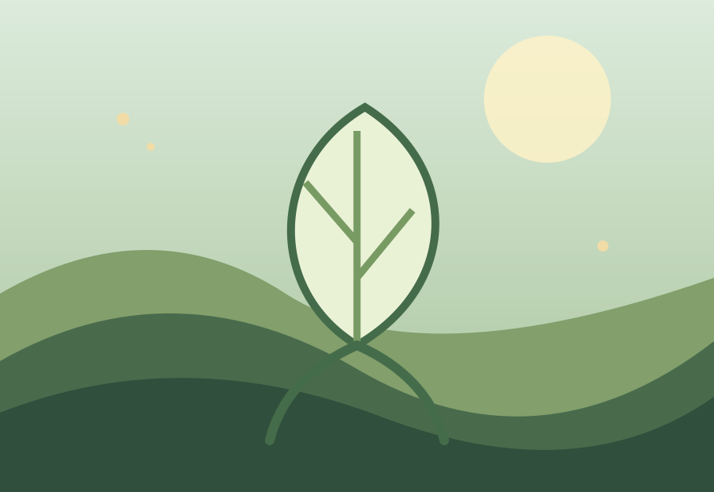

SAN PATRICIO DEL CHAÑAR · NEUQUÉN
Historias, personas y territorio.
Un lugar para descubrir historias, naturaleza y comunidad. Elegí una puerta o dejate orientar por lo que viniste a buscar.
⌖ CARTOGRAFÍA VIVA
CAMPOAGUAMEMORIADATOSCOMUNIDAD
SAN PATRICIO DEL CHAÑARNUEVE MUNDOS PARA EXPLORAR
¿Qué necesitás hoy?
Para estudiar, resolver una consulta, descubrir algo nuevo o compartir en familia.
Buscá por tema o necesidad: escuela, datos, trámites, fotos, historias.
O TAMBIÉN PODÉS EMPEZAR POR ACÁ
01 · LEERLIBRITOBiblioteca y archivoLibros y documentos para leer y consultar.Libros · Hemeroteca · DocumentosPAPEL Y MEMORIAEntrar
02 · MIRAROCARINA TVCine documentalPelículas y documentales del territorio.Documentales · Entrevistas · RecorridosCINE DEL TERRITORIOEntrar
 05 · CONECTARCHAÑAR HUBGuía local y comunidadGuía local y referencias útiles del Chañar.Guía local · Referencias · ComunidadCARTOGRAFÍA COMUNITARIAEntrar
05 · CONECTARCHAÑAR HUBGuía local y comunidadGuía local y referencias útiles del Chañar.Guía local · Referencias · ComunidadCARTOGRAFÍA COMUNITARIAEntrar
 06 · ORIENTARSECÓDIGO CEROOrientación prácticaInformación práctica para saber dónde consultar.Orientación · Consultas · RecursosINFORMACIÓN CLARAEntrar
06 · ORIENTARSECÓDIGO CEROOrientación prácticaInformación práctica para saber dónde consultar.Orientación · Consultas · RecursosINFORMACIÓN CLARAEntrar
 07 · SEGUIRYOUTUBECanal audiovisualVideos y nuevas historias del canal de Elías.Videos · Estrenos · RecorridosSEGUÍ LAS HISTORIASEntrar
08 · ESCUCHARRADIO ONLINEUna señal para escucharEscuchá la señal de Ocarina.Señal online · EscuchaSINTONIZÁ OCARINAEntrar
07 · SEGUIRYOUTUBECanal audiovisualVideos y nuevas historias del canal de Elías.Videos · Estrenos · RecorridosSEGUÍ LAS HISTORIASEntrar
08 · ESCUCHARRADIO ONLINEUna señal para escucharEscuchá la señal de Ocarina.Señal online · EscuchaSINTONIZÁ OCARINAEntrar
 09 · COMPARTIROCARINA SOCIALLa comunidad comparteFotografías y novedades de Ocarina.Fotografías · Novedades · ComunidadHISTORIAS COMPARTIDASEntrar
09 · COMPARTIROCARINA SOCIALLa comunidad comparteFotografías y novedades de Ocarina.Fotografías · Novedades · ComunidadHISTORIAS COMPARTIDASEntrar

03 · OBSERVAROCARINA WILDNaturaleza y vida silvestreAnimales, plantas y paisajes para observar.Fauna · Flora · AmbientesNATURALEZA VIVAEntrar 04 · DESCUBRIR¿SABÍAS QUE?Curiosidades del territorioPreguntas y juegos para descubrir cosas nuevas.Preguntas · Hallazgos · JuegosUNA SORPRESA EN CADA VISITAEntrar05 · CONECTARCHAÑAR HUBGuía local y comunidadGuía local y referencias útiles del Chañar.Guía local · Referencias · ComunidadCARTOGRAFÍA COMUNITARIAEntrar
06 · ORIENTARSECÓDIGO CEROOrientación prácticaInformación práctica para saber dónde consultar.Orientación · Consultas · RecursosINFORMACIÓN CLARAEntrar
07 · SEGUIRYOUTUBECanal audiovisualVideos y nuevas historias del canal de Elías.Videos · Estrenos · RecorridosSEGUÍ LAS HISTORIASEntrar
08 · ESCUCHARRADIO ONLINEUna señal para escucharEscuchá la señal de Ocarina.Señal online · EscuchaSINTONIZÁ OCARINAEntrar
09 · COMPARTIROCARINA SOCIALLa comunidad comparteFotografías y novedades de Ocarina.Fotografías · Novedades · ComunidadHISTORIAS COMPARTIDASEntrar
Cada puerta te lleva a una experiencia distinta. Podés entrar, explorar y volver a este punto para elegir otro camino.
UN PUENTE QUE PERMANECE

Rosa Benita Bustos · Siempre presente
Rosa Benita Bustos
Mi abuela. Mi raíz. Mi puente más grande.
Universo Ocarina nace de ese puente: el que mi abuela me tendió al enseñarme a creer en mí. Una mujer indígena, del medio del campo, cuya grandeza nunca necesitó títulos ni reconocimientos.
Todo lo que construyo lleva algo de vos. Todo esto también es por vos.
Elías Martínez Con orgullo y gratitud